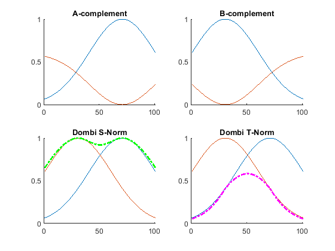
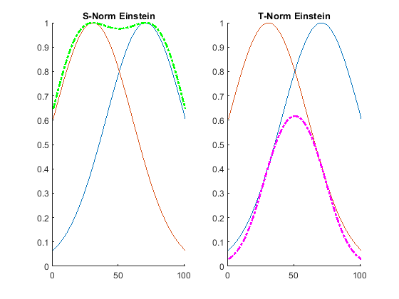

Computational Intelligence Lab Report - Lab 9 - Mr. Amini
Seyed Mohammadsaleh Mirzatabatabaei - 9623105
Contents
Clear recent data
close all; clc; clearvars;
Define variables
U = 0 : 0.01 : 1; A = gaussmf(U, [0.3 0.7]); B = gaussmf(U, [0.3 0.3]); landa = rand(1);
Plot results
% A and B Complements figure; subplot(2, 2, 1); hold on; plot(A); plot(sugno(A, landa)); title('A-complement'); subplot(2, 2, 2); hold on; plot(B); plot(sugno(B, landa)); title('B-complement'); % Dombi S_Norm and T_Norm subplot(2, 2, 3); hold on; plot(A); plot(B); plot(S_Norm(A, B, landa), 'g-.', 'LineWidth', 2); title('Dombi S-Norm'); subplot(2, 2, 4); hold on; plot(A); plot(B); plot(T_Norm(A, B, landa), 'm-.', 'LineWidth', 2); title('Dombi T-Norm'); % Einstein S_Norm and T_Norm (Exercise) figure; subplot(1, 2, 1); hold on; plot(A); plot(B); plot(S_Norm_Einstein(A, B), 'g-.', 'LineWidth', 2); title('S-Norm Einstein'); subplot(1, 2, 2); hold on; plot(A); plot(B); plot(T_Norm_Einstein(A, B), 'm-.', 'LineWidth', 2); title('T-Norm Einstein');

Fuzzy functions
% Complement function mu_bar = sugno(mu, landa) mu_bar = (1 - mu) / (1 + landa); end % Dombi S_Norm and T_Norm function S_landa = S_Norm(mu1, mu2, landa) S_landa = 1 ./ (1 + ( ( ( (1 ./ mu1) - 1) .^ -landa ) + ( ( (1 ./ mu2) - 1) .^ -landa ) ) .^ (-1 / landa) ); end function T_landa = T_Norm(mu1, mu2, landa) T_landa = 1 ./ (1 + ( ( ( (1 ./ mu1) - 1) .^ landa ) + ( ( (1 ./ mu2) - 1) .^ landa ) ) .^ (1 / landa) ); end % Einstein S_Norm and T_Norm (Exercise) function S_es = S_Norm_Einstein(mu1, mu2) S_es = (mu1 + mu2) ./ (1 + (mu1 .* mu2) ); end function T_es = T_Norm_Einstein(mu1, mu2) T_es = (mu1 .* mu2) ./ (2 - (mu1 + mu2 - mu1 .* mu2) ); end 
Pre-Report:
1 - Difference between crisp and fuzzy: In a crisp set, an element is either a member of the set or not. For example, a jelly bean belongs in the class of food known as candy. Mashed potatoes do not. Fuzzy sets, on the other hand, allow elements to be partially in a set. Each element is given a degree of membership in a set. This membership value can range from 0 (not an element of the set) to 1 (a member of the set).